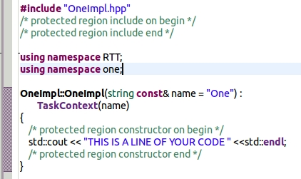

Code can be generated and edited multiple times. If you put your code within the boundaries of the protected region then your code will be preserved between nultiple cycles of code generation. It is strongly recommended that you set as true the following Workspace preferences:
For every TaskContext there is a C++ header file (hpp) and a C++ source file (cpp). The cpp file is an empty template for a TaskContext with the main methods that should or must be implemented. The following is an example of where to put your code within a protected region:
